CAO
J'ai alors déssiné une coque en deux parties, ainsi qu'un mécanisme intérieur constitué d'un moteur de deux axes liés par des engranages coniques, d'un disque, et d'un verrou pour le disque, en ajoutant aussi une poignée pour la main.
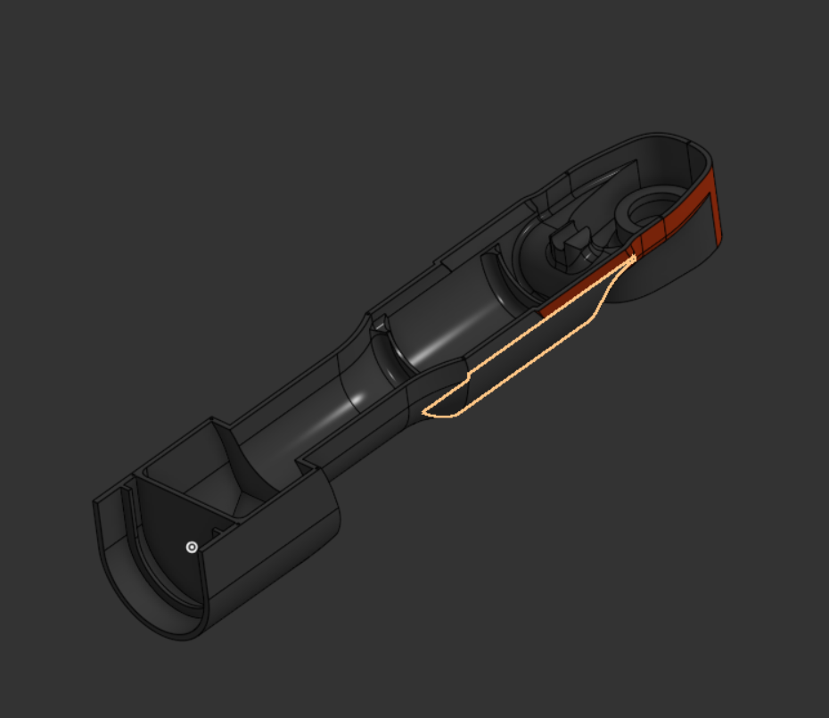
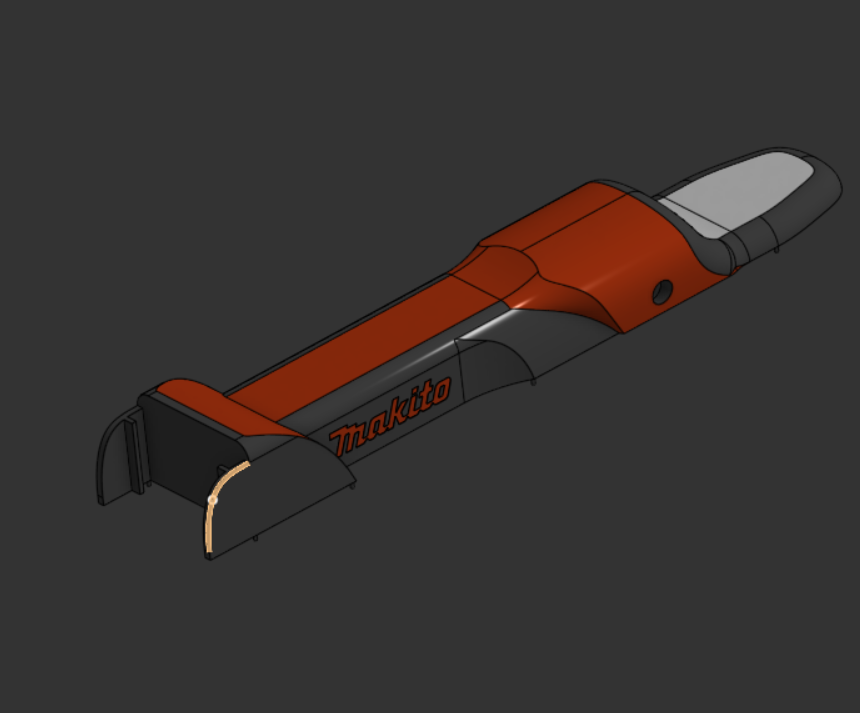
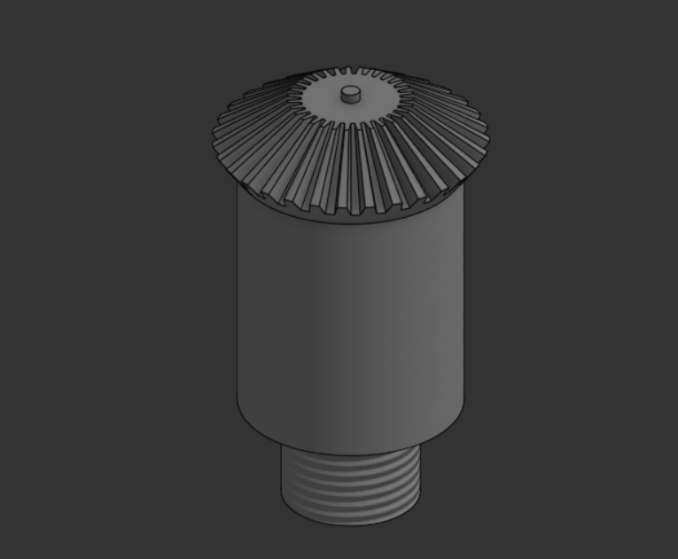
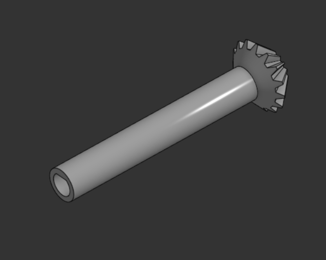
 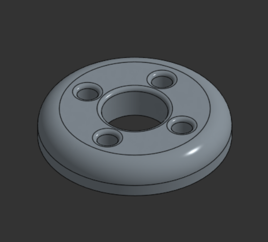
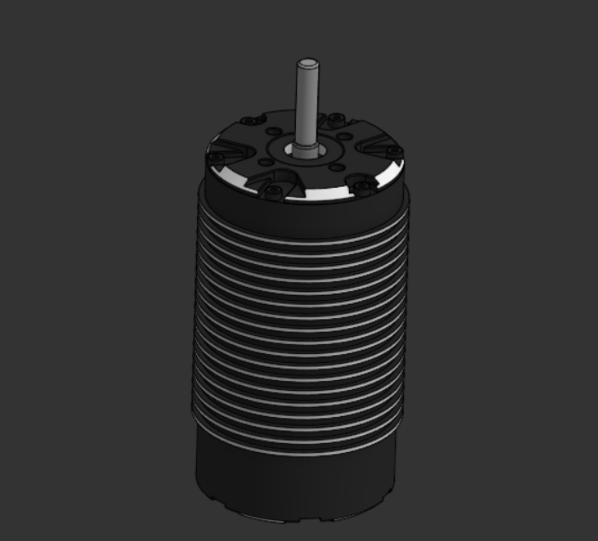
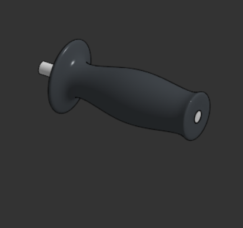
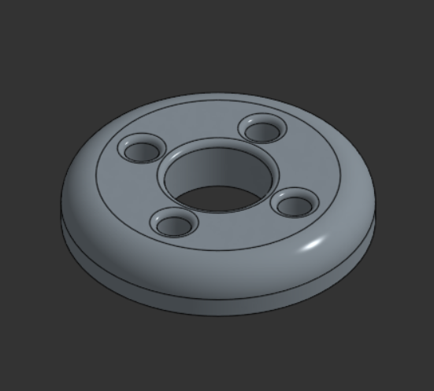
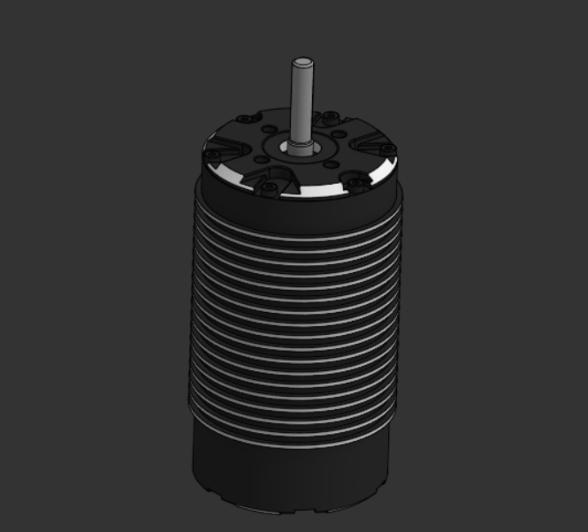
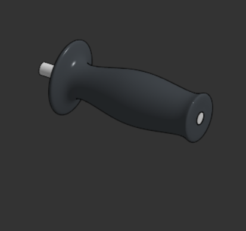
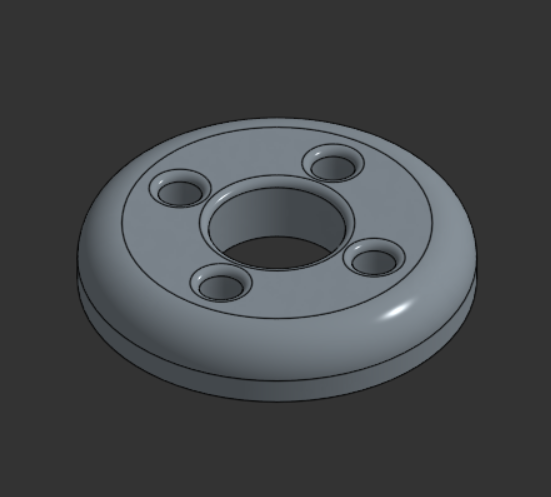
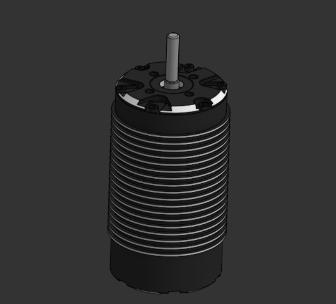
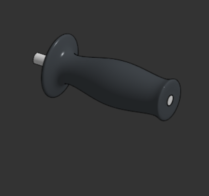